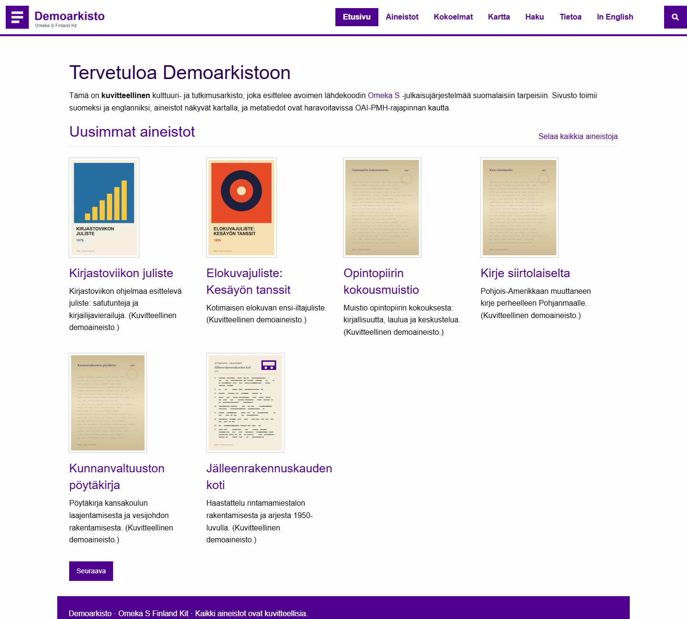
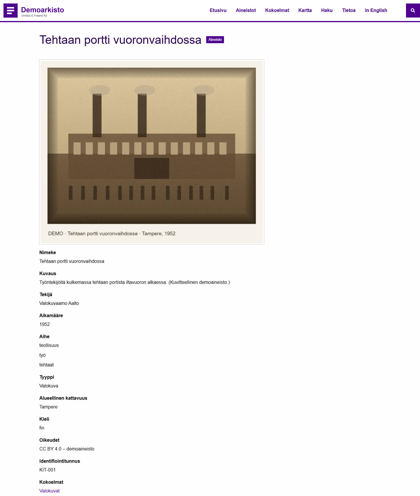
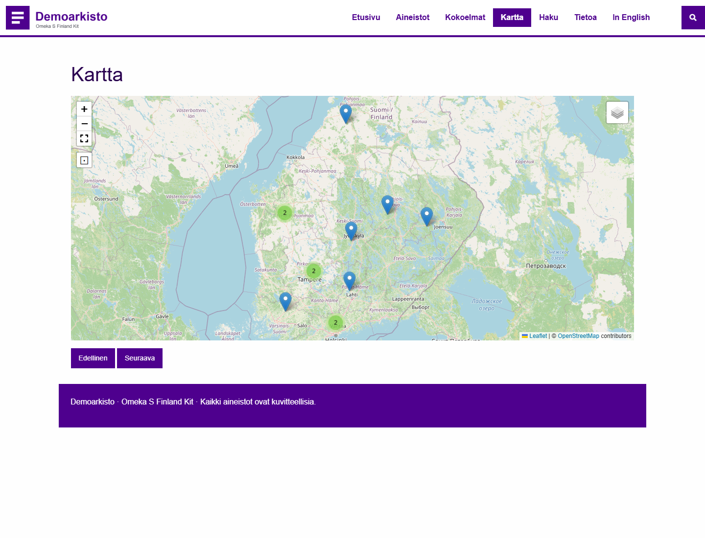
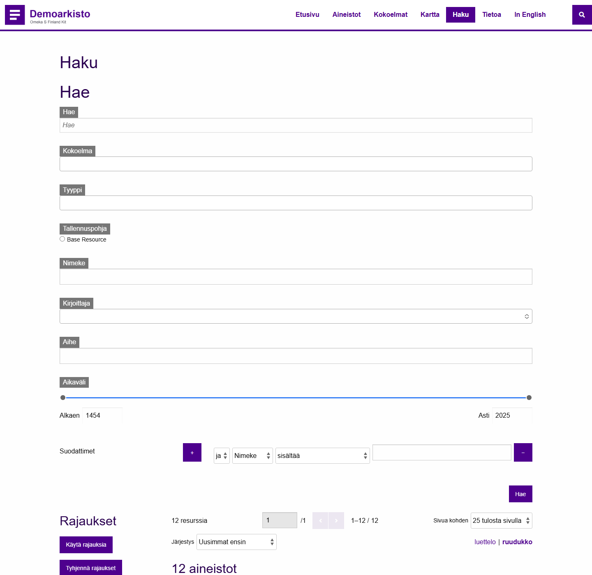
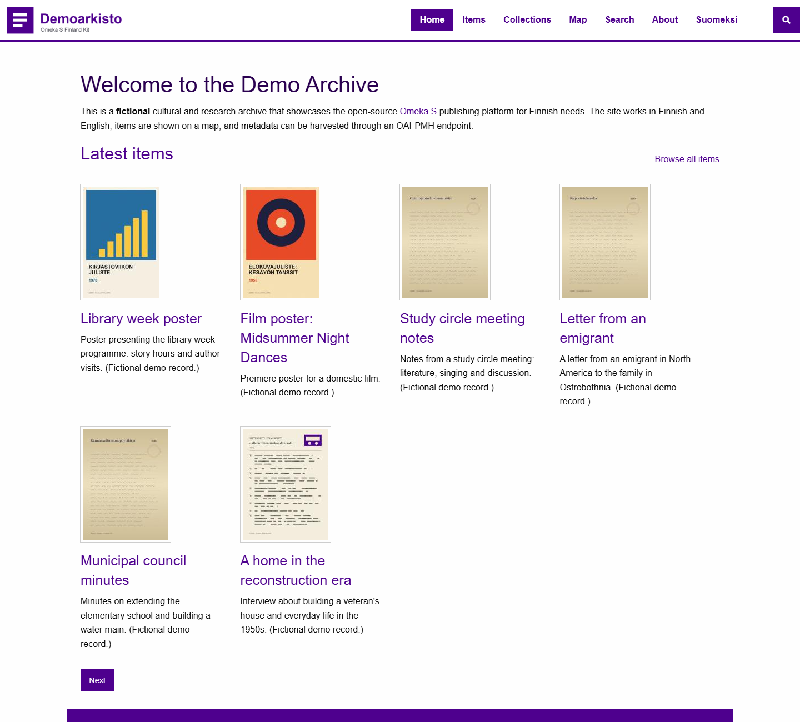
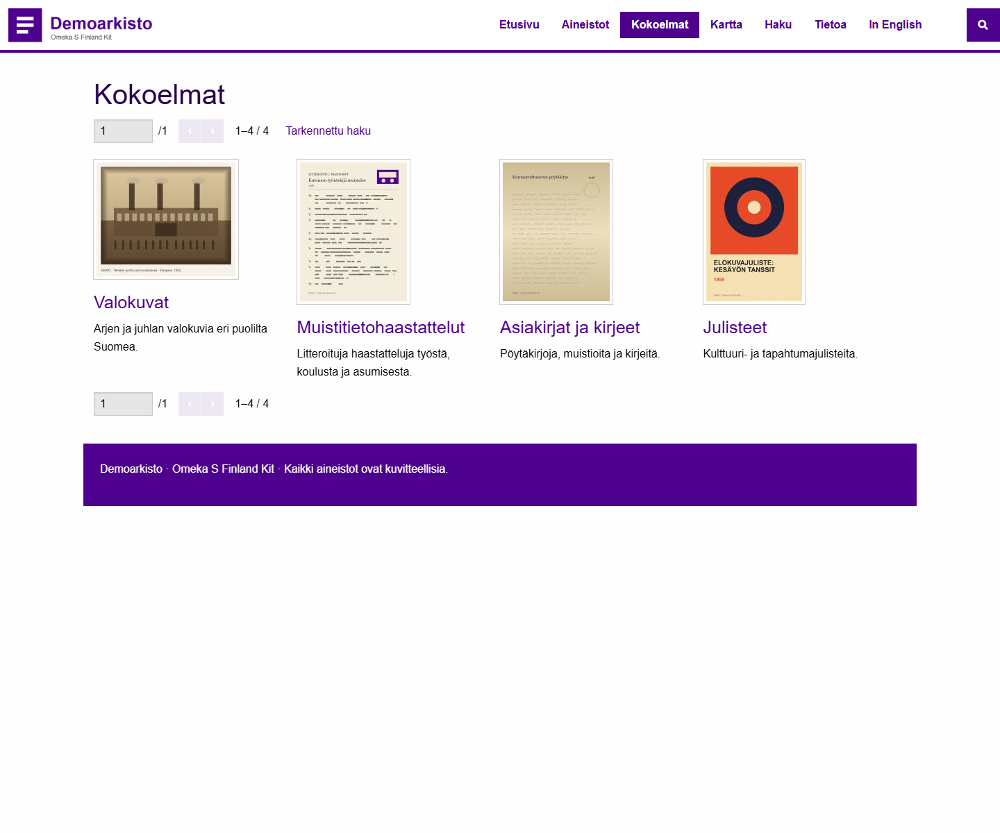
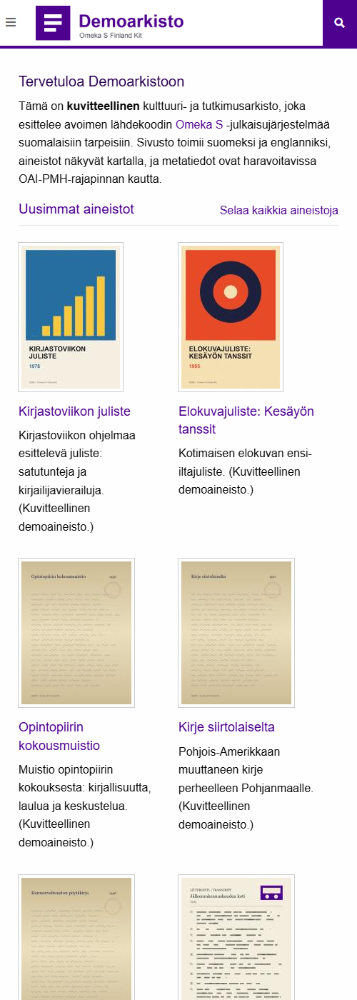

Kaksikielinen Omeka S kulttuuri- ja tutkimusarkistoille
Avoimen lähdekoodin kokoonpano, jossa on Omeka S 4.2, 33 lukittua lisäosaa, lisäosien suomennokset, kartat, tarkennettu haku, OAI-PMH-rajapinta ja Docker-ympäristö. A bilingual Finnish/English Omeka S distribution.

docker compose upOminaisuudet
Kaksi kieltä, yksi aineisto
Sivustot /s/fi ja /s/en näyttävät samat aineistot. Arvot on merkitty kielitunnisteilla ja suodatetaan sivuston kielen mukaan.
Suomennetut lisäosat
Julkisen käyttöliittymän tekstit 11 lisäosaan: haku, vierailijatilit, yhteydenotto, kartat, viitteet ja hierarkiat.
Kartat
Aineistot karttapisteinä Mapping-lisäosalla, klusterointi ja taustakartan valinta.
Tarkennettu haku
Rajaukset, aikaväli, suodattimet ja lajittelu. Kummallekin kielelle oma hakuasetus.
OAI-PMH
Haravointirajapinta, jossa arvot välitetään xml:lang-tunnisteilla. Finnan qdc-formaatti on tiekartalla.
Päivitysturvallinen ulkoasu
Logo, brändiväri ja fontti CSS Editorilla. Teematiedostoihin ei kosketa, joten päivitykset eivät riko mukautuksia.
Kuvakaappaukset






Demoarkiston aineistot ja kuvat ovat kuvitteellisia ja skriptin generoimia. Suomennokset ovat luonnos, ja niiden kielentarkastus on kesken.
Pika-aloitus
git clone https://github.com/svenzer6/omeka-s-finland-kit.git
cd omeka-s-finland-kit
cp .env.example .env # vaihda CHANGE-ME-arvot
docker compose up -d --build
# avaa http://localhost:8080/s/fiIlman Dockeria: katso asennusohje. Kaikki lisäosat ja versiot: modules.json.